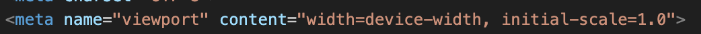
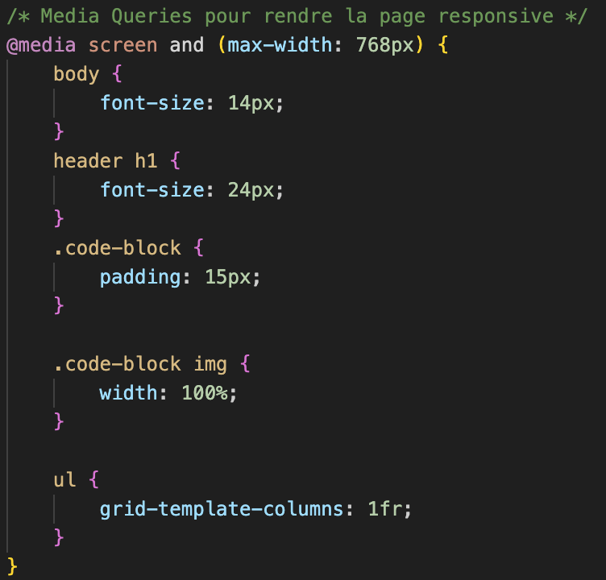
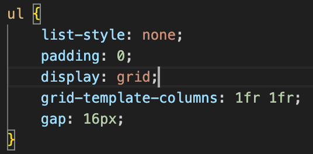
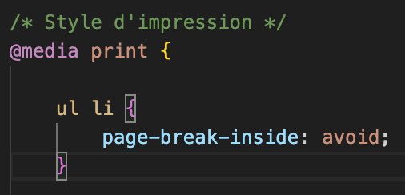

Bienvenue sur mon site
Ceci est un exemple de site qui utilise des techniques de design responsive. Vous verrez ci-dessous quelques morceaux de code avec leurs justifications.
Justification des morceaux de code
-
Morceau de Code 1 : Utilisation de la balise viewport

Cette balise définit comment le contenu de la page s'adapte en fonction de la taille de l'écran du périphérique. Elle permet à la page d'être responsive en ajustant le zoom et la largeur selon l'appareil utilisé.
-
Morceau de Code 2 : Media Query pour les écrans plus petits

Cette règle CSS ajuste la taille de la police pour les écrans dont la largeur est inférieure à 768px (par exemple, les smartphones), afin d'améliorer la lisibilité.
-
Morceau de Code 3 : Disposition des éléments sur la page

La mise en page utilise un système de grille (Grid layout) qui organise les éléments de manière structurée. Ce positionnement est responsive : il s’adapte à la largeur de l'écran et bascule en disposition verticale (bloc) sur les petits écrans pour une meilleure lisibilité.
-
Morceau de Code 4 : Impression de la page avec @print

Grâce à la directive
@media print, on peut contrôler l'affichage lors de l'impression, notamment en forçant des sauts de page à des endroits précis à l'aide de propriétés comme page-break-before, page-break-after ou ici page-break-inside qui permet de regrouper les échantillons de code.